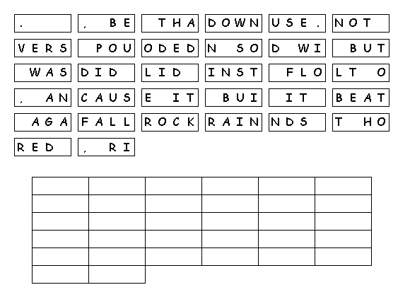
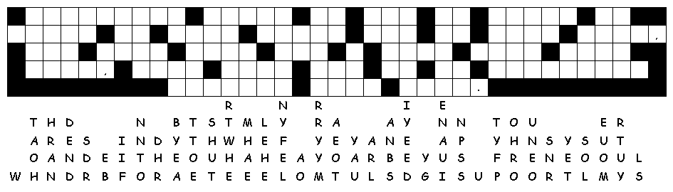

This week's lessons: Genesis 6:9-22; 7:24; 8:14-19 and Psalm 46 or Deuteronomy 11:18-21, 26-28 and Psalm 31:1-5, 19-24, Romans 1:16-17; 3:22b-28, (29-31), Matthew 7:21-29
This
week's lessons: Genesis
6:9-22; 7:24; 8:14-19
and Psalm
46 or
Deuteronomy
11:18-21, 26-28
and Psalm
31:1-5, 19-24, Romans
1:16-17; 3:22b-28, (29-31), Matthew
7:21-29
Elementary School Pew-work
Unscramble the BOLD words:
Anyone who hears and obeys these thineacgs_________ of mine is like a wise person who built a house on isodl_________ ocrk_________. Rain poured down, rivers flooded, and swndi_________ beat against that house. But it did not fall, because it was built on solid rock. Anyone who hears my teachings and doesn't obey them is like a foolish person who built a house on snda_________. The rain poured down, the rivers flooded, and the winds blew and beat against that house. Finally, it fell with a ascrh_________.
When sJuse_________ finished speaking, the crowds were surprised at his teaching. He taught them like someone with itarhtyuo_________, and not like their teachers of the Law of Moses.
1.
Where did the wise person build his
house?
________________________________________________________________________________
2.
Where did the foolish person build his
house?
________________________________________________________________________________
3.
Why were the crowds surprised at Jesus'
teaching?
________________________________________________________________________________
Questions taken from Sunday School Lessons; http://www.sundayschoollessons.com/baplord.htm

Next week Genesis 12:1-9, Psalm 33:1-12) or (Hosea 5:15-6:6, Psalm 50:7-15, Romans 4:13-25, Matthew 9:9-13, 18-26
This
week's lessons: Genesis
6:9-22; 7:24; 8:14-19 and Psalm
46 or Deuteronomy
11:18-21, 26-28 and Psalm
31:1-5, 19-24, Romans
1:16-17; 3:22b-28, (29-31), Matthew
7:21-29
Middle-School Pew-work
How does a person acquire faith? How do we nurture it? How do we lose it?
_______________________________________________________________________________________
_______________________________________________________________________________________
_______________________________________________________________________________________
_______________________________________________________________________________________
_______________________________________________________________________________________
_______________________________________________________________________________________
_______________________________________________________________________________________
_______________________________________________________________________________________
_______________________________________________________________________________________
_______________________________________________________________________________________
_______________________________________________________________________________________
_______________________________________________________________________________________
_______________________________________________________________________________________

Next week Genesis 12:1-9, Psalm 33:1-12) or (Hosea 5:15-6:6, Psalm 50:7-15, Romans 4:13-25, Matthew 9:9-13, 18-26